TELA VIVA · Formação da equipe · Edição 23/11/2026
Do primeiro contato à proposta aceita
Uma jornada guiada no CRM, com 49 prints reais da aplicação, exemplos preenchidos e ações para praticar.
TREINAMENTO ILUSTRADODADOS FICTÍCIOSUSO INTERNO
Cliente do exercício: Marina, do Estúdio Aurora. Origem: contato pós Tattoo Week. Venda didática: 20 kits fictícios, total de R$ 1.800,00.
As capturas foram produzidas na mesma aplicação do repositório, com login real em um banco temporário separado. A base de trabalho da equipe foi preservada. Este material não contém contrato emitido: o CRM atual permite proposta e aceite; a formalização contratual é externa.
20 unidades / 10% de desconto / R$ 90,00 efetivos por unidade
Total da proposta
R$ 2.000,00 − R$ 200,00 = R$ 1.800,00
Nenhum nome, documento ou preço do exemplo deve ser copiado para a operação real. A composição e a tabela dos produtos Pele Rara devem vir do catálogo oficial.
Roteiro de consulta
As telas, na ordem do atendimento
No HTML, clique no print para ampliar. No PDF, use o zoom do leitor. As instruções ao lado explicam o que preencher, executar e conferir.
Tela Viva · Passo 01 / 49
Entrar no Tela Viva
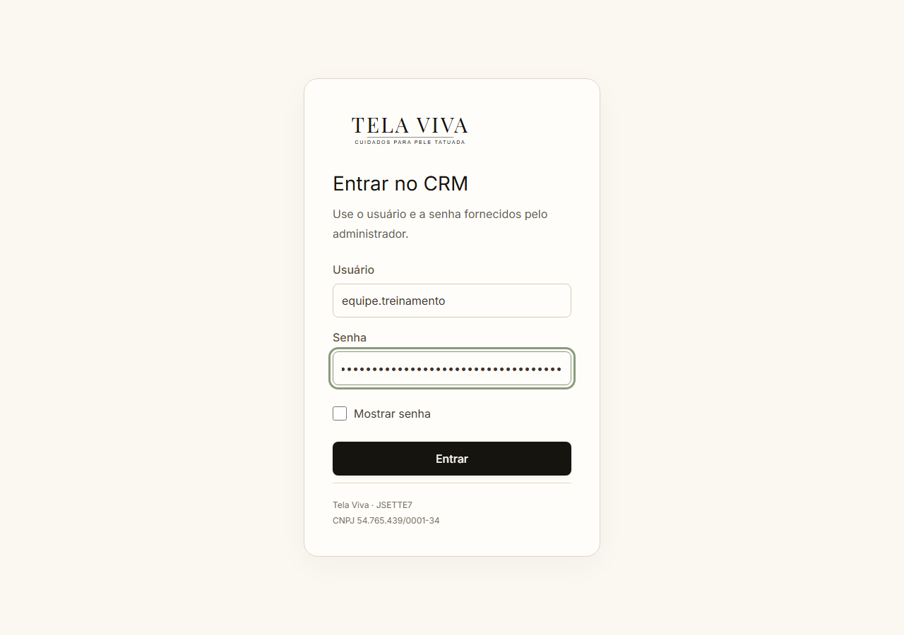
Aplicação Tela Viva · cenário fictício · /entrar
O que fazer
Abra o endereço do CRM e informe o usuário entregue pela administração.
Digite a senha e clique em Entrar. O login não pede código do autenticador.
Confira A sessão abre a visão geral. A senha está oculta no print.
Tela Viva · Passo 02 / 49
Reconhecer a visão geral
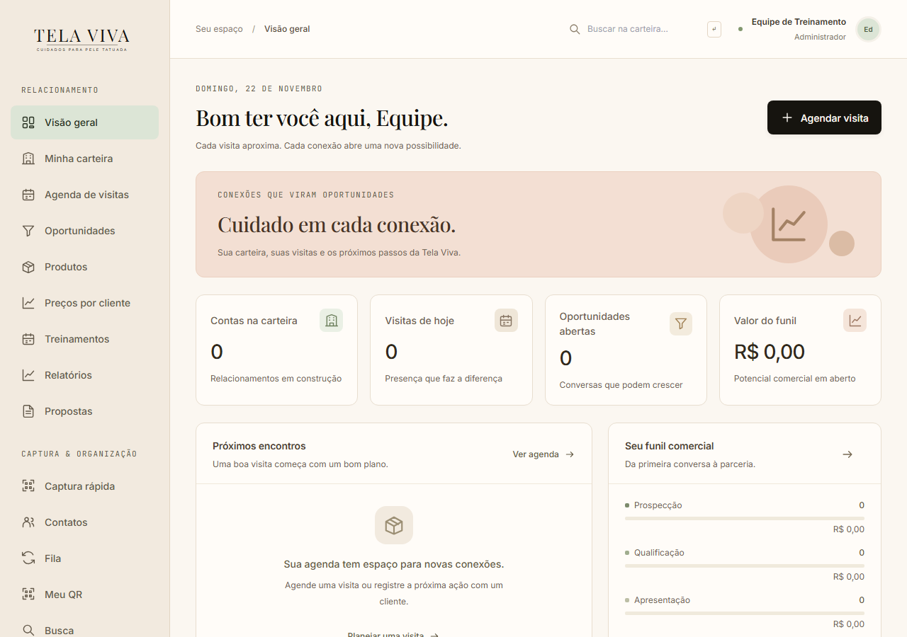
Aplicação Tela Viva · cenário fictício · /
O que fazer
Observe os atalhos de captura e agenda.
Use o menu lateral para carteira, funil, propostas e demais módulos.
Confira O painel começa vazio nesta base exclusiva de treinamento.
Tela Viva · Passo 03 / 49
Primeiro contato na Tattoo Week
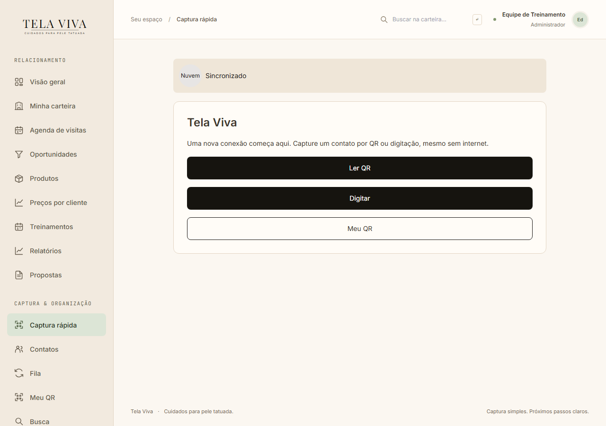
Aplicação Tela Viva · cenário fictício · /capturar
O que fazer
Exemplo fictício: Marina, do Estúdio Aurora, quer conhecer o portfólio.
Clique em Digitar para registrar o que já sabe; Ler QR usa a câmera.
Confira A coleta aceita informações incompletas.
Dados, produto e valores deste guia são fictícios.
Tela Viva · Passo 04 / 49
Capturar somente o nome
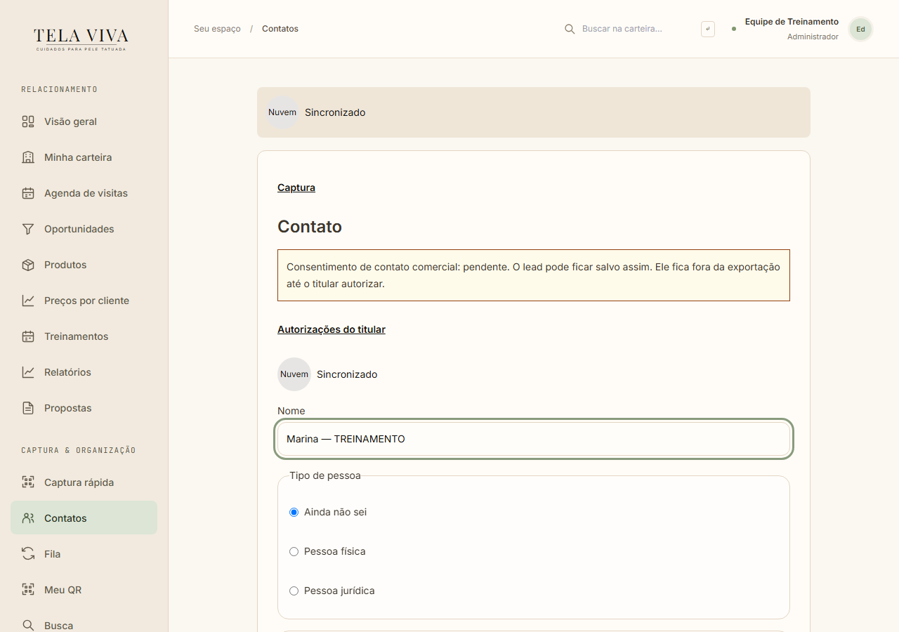
Aplicação Tela Viva · cenário fictício · /contatos/registro
O que fazer
Preencha Nome. Não espere receber todos os documentos.
O formulário salva automaticamente; observe o indicador de sincronização.
Confira O nome já fica guardado. Não existe campo obrigatório nesta captura.
Tela Viva · Passo 05 / 49
Complementar o contato e o contexto
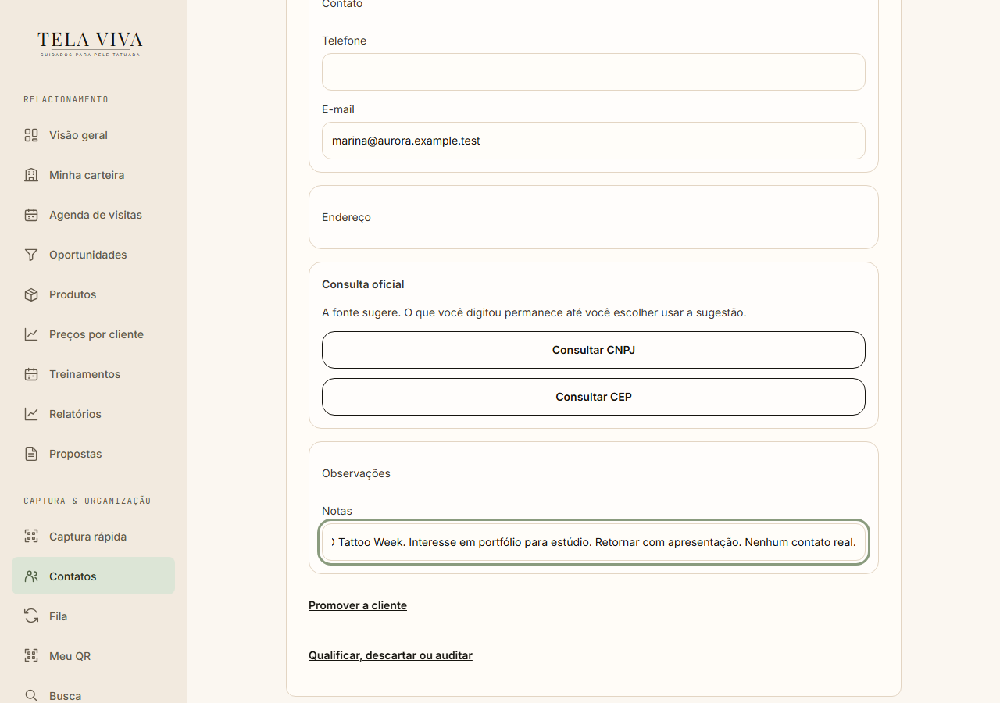
Aplicação Tela Viva · cenário fictício · /contatos/registro
O que fazer
Abra Contato e informe o e-mail confirmado com a pessoa.
Em Observações, registre a origem e o interesse, sem dados desnecessários.
Confira O cadastro guarda contexto para o próximo atendimento.
O endereço example.test não recebe mensagens reais.
Tela Viva · Passo 06 / 49
Conferir a fila de sincronização
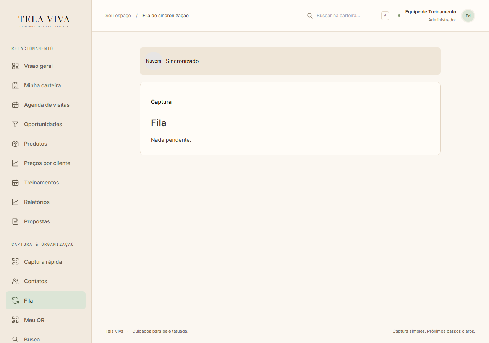
Aplicação Tela Viva · cenário fictício · /fila
O que fazer
Abra Fila para verificar pendências e falhas.
Aguarde a confirmação; salvar no aparelho e chegar ao servidor são momentos diferentes.
Confira O contato desta simulação foi sincronizado.
Sem internet, a captura continua local; os módulos comerciais precisam de conexão.
Tela Viva · Passo 07 / 49
Localizar o contato salvo
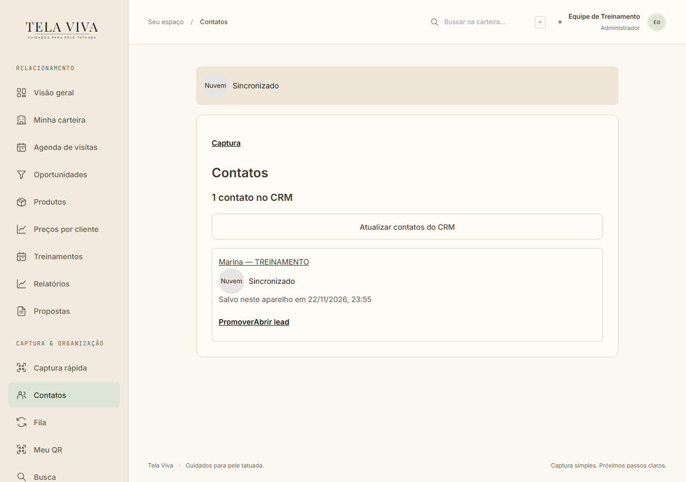
Aplicação Tela Viva · cenário fictício · /contatos
O que fazer
Abra Contatos e encontre Marina — TREINAMENTO.
Registros locais e contatos autorizados do servidor podem aparecer na lista.
Confira A equipe consegue retomar o cadastro.
Tela Viva · Passo 08 / 49
Conferir as autorizações do titular
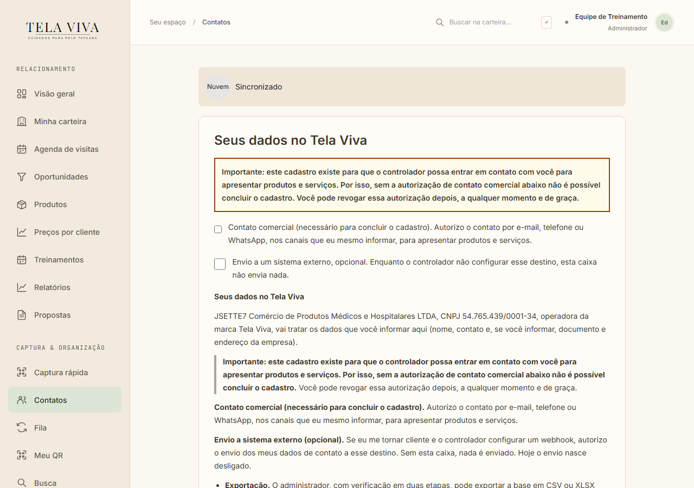
Aplicação Tela Viva · cenário fictício · /contatos/registro/termo
O que fazer
Abra Autorizações do titular a partir do contato.
Explique as finalidades; registre apenas a escolha efetiva da pessoa.
Confira A tela mostra as escolhas disponíveis; o treinamento não registra consentimento real.
Ter telefone ou e-mail preenchido não comprova autorização para campanha.
Tela Viva · Passo 09 / 49
Conferir o status capturado
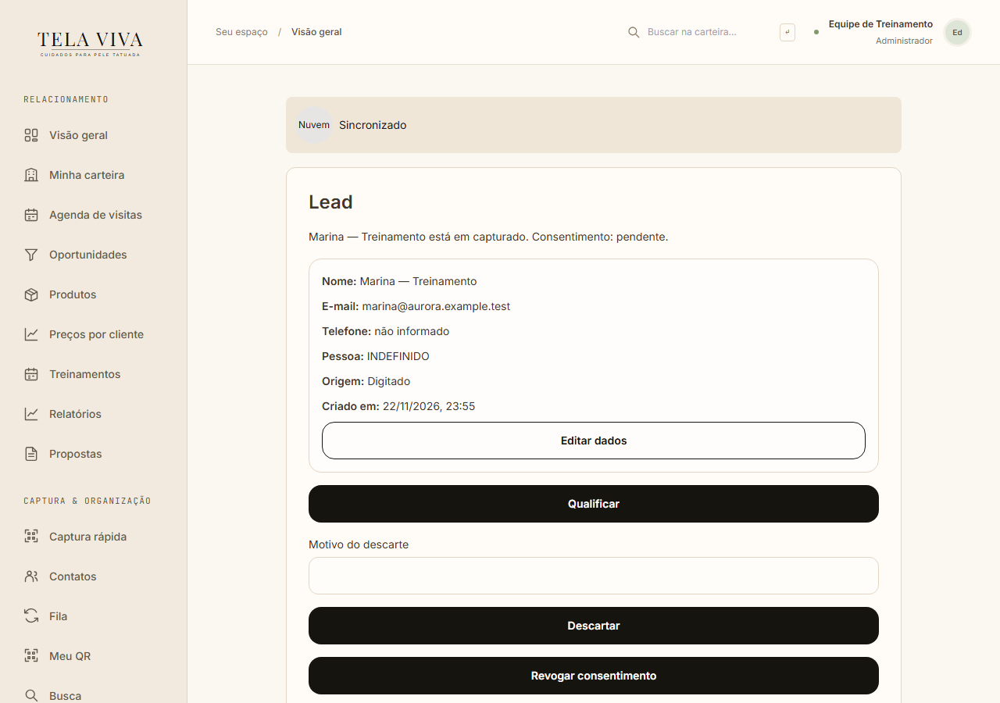
Aplicação Tela Viva · cenário fictício · /lead/registro
O que fazer
Gestor ou administrador abre o Lead.
Confira o estado: este cadastro manual já chegou como Capturado. Se estiver em Rascunho, use Marcar como capturado.
Confira O contato está capturado e pode ser qualificado.
Tela Viva · Passo 10 / 49
Completar os dados exigidos na promoção
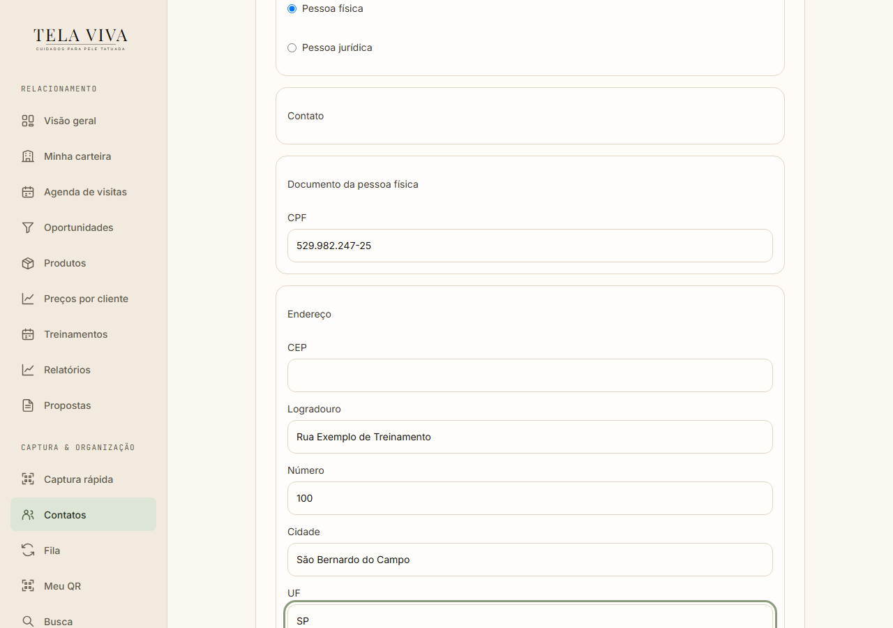
Aplicação Tela Viva · cenário fictício · /contatos/registro
O que fazer
Antes de qualificar, confirme nome, CPF/CNPJ válido e pelo menos um canal de contato.
Para promover a cliente, complete também logradouro, número, cidade e UF.
Nesta simulação foi usado apenas um CPF de exemplo em base descartável.
Confira Os dados necessários são completados depois da captura.
Nunca copie o documento de exemplo para a base real. Não foi feita consulta externa de documento.
Tela Viva · Passo 11 / 49
Qualificar o interesse comercial
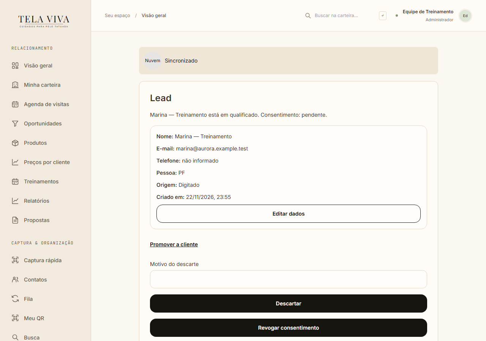
Aplicação Tela Viva · cenário fictício · /lead/registro
O que fazer
Confirme se o perfil e a necessidade fazem sentido para a carteira.
Clique em Qualificar; registre o diagnóstico em observações e atividades.
Confira O contato fica qualificado e a promoção passa a estar disponível.
Qualificação comercial não substitui autorização de comunicação.
Tela Viva · Passo 12 / 49
Promover com confirmação da gestão
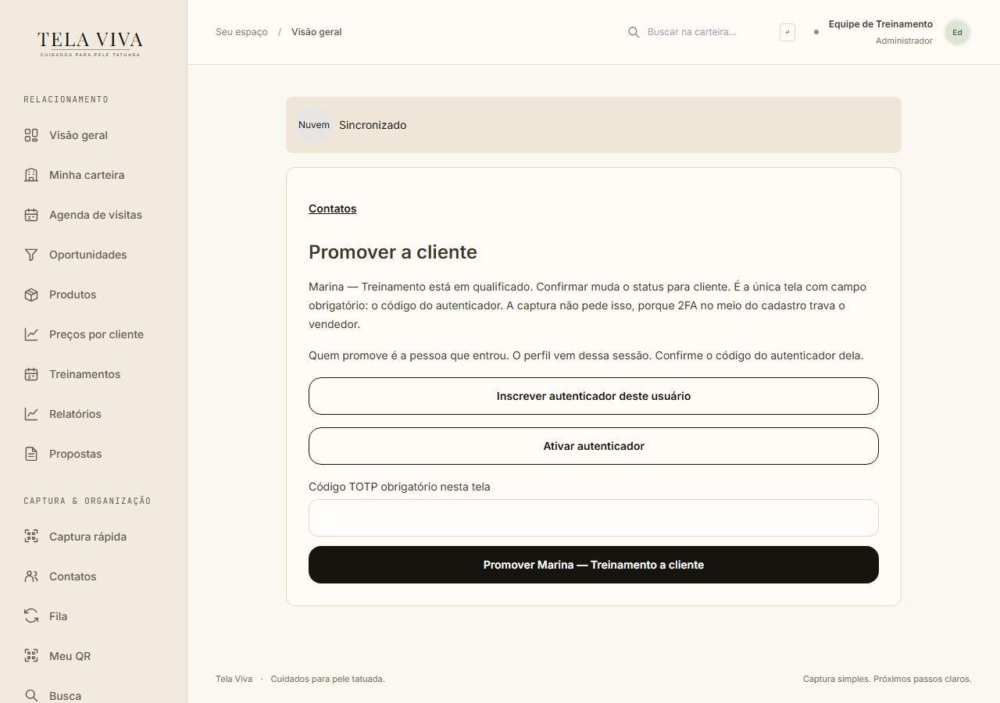
Aplicação Tela Viva · cenário fictício · /promover/registro
O que fazer
Clique em Promover a cliente no lead qualificado.
Gestor/admin usa o próprio código do autenticador e confirma a promoção.
Confira A operação exige TOTP; o login comum continua simples.
A inscrição do autenticador deve ser feita em Minha conta. Nunca compartilhe seu segredo ou código.
Tela Viva · Passo 13 / 49
Confirmar o novo status cliente
Aplicação Tela Viva · cenário fictício · /promover/registro
O que fazer
Confira a mensagem O contato agora é cliente.
Na sequência, organize a instituição em Minha carteira.
Confira A promoção foi confirmada pelo servidor.
Promover um contato não cria conta comercial, oportunidade ou proposta automaticamente.
Tela Viva · Passo 14 / 49
Criar a instituição na carteira
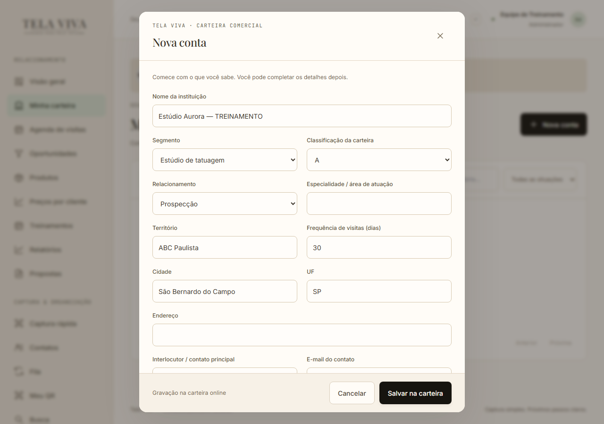
Aplicação Tela Viva · cenário fictício · /carteira
O que fazer
Em Minha carteira, clique em Nova conta.
Preencha instituição, segmento, classificação ABC e território.
Use prospect enquanto ainda está desenvolvendo o relacionamento.
Confira O cadastro organiza a instituição e a rotina de visitas.
Tela Viva · Passo 15 / 49
Definir interlocutor e próxima ação
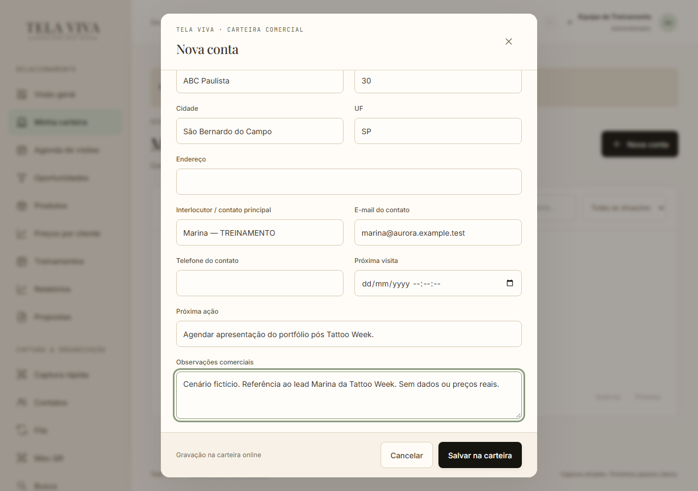
Aplicação Tela Viva · cenário fictício · /carteira
O que fazer
Informe o contato principal e os canais conhecidos.
Defina a próxima ação e as observações comerciais.
Clique em Salvar na carteira e aguarde a confirmação.
Confira A conta fica disponível para agenda, oportunidade e proposta.
O cadastro da instituição é separado do contato capturado.
Tela Viva · Passo 16 / 49
Abrir a visão da conta
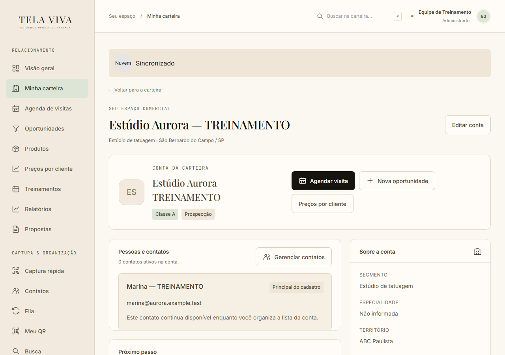
Aplicação Tela Viva · cenário fictício · /carteira/registro
O que fazer
Clique no nome da instituição na carteira.
Use os atalhos para agendar visita, criar oportunidade e consultar preços.
Confira A ficha reúne o relacionamento e o histórico comercial.
Tela Viva · Passo 17 / 49
Organizar as pessoas da conta
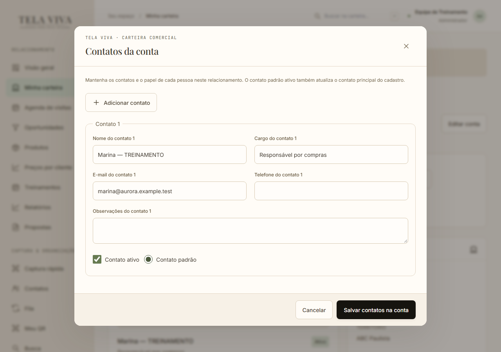
Aplicação Tela Viva · cenário fictício · /carteira/registro
O que fazer
Clique em Gerenciar contatos e Adicionar contato.
Informe nome, cargo e e-mail; mantenha o contato ativo e marque Contato padrão.
Salve para habilitar a seleção de destinatário nas propostas.
Confira Marina passa a ser uma pessoa de contato ativa e padrão da instituição.
Tela Viva · Passo 18 / 49
Planejar a visita ou reunião
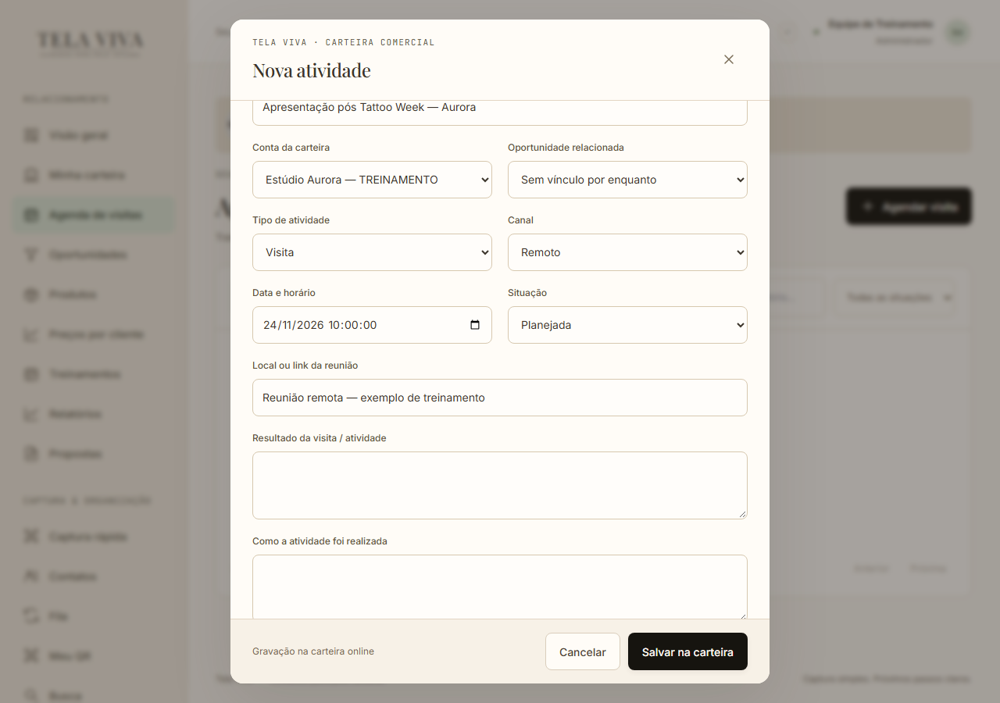
Aplicação Tela Viva · cenário fictício · /agenda
O que fazer
Abra Agenda e crie a atividade vinculada à conta.
Escolha tipo/canal, data e local; atribua responsável e colaboradores quando necessário.
Registre a próxima ação e salve.
Confira O compromisso fica planejado na agenda.
Tela Viva · Passo 19 / 49
Registrar a visita realizada
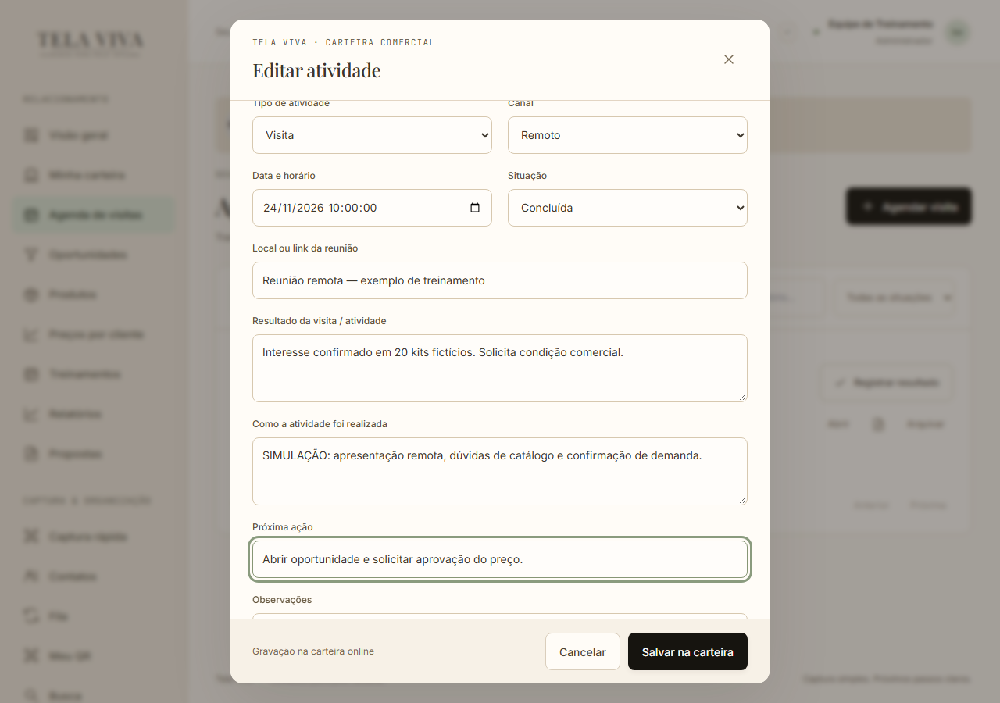
Aplicação Tela Viva · cenário fictício · /agenda
O que fazer
Edite a atividade e selecione Concluída.
Preencha Resultado, Como a atividade foi realizada e Próxima ação.
Salve: concluir uma atividade registra sua realização.
Confira A equipe passa a conhecer o que ocorreu e quem deve agir.
Tela Viva · Passo 20 / 49
Abrir a oportunidade de venda
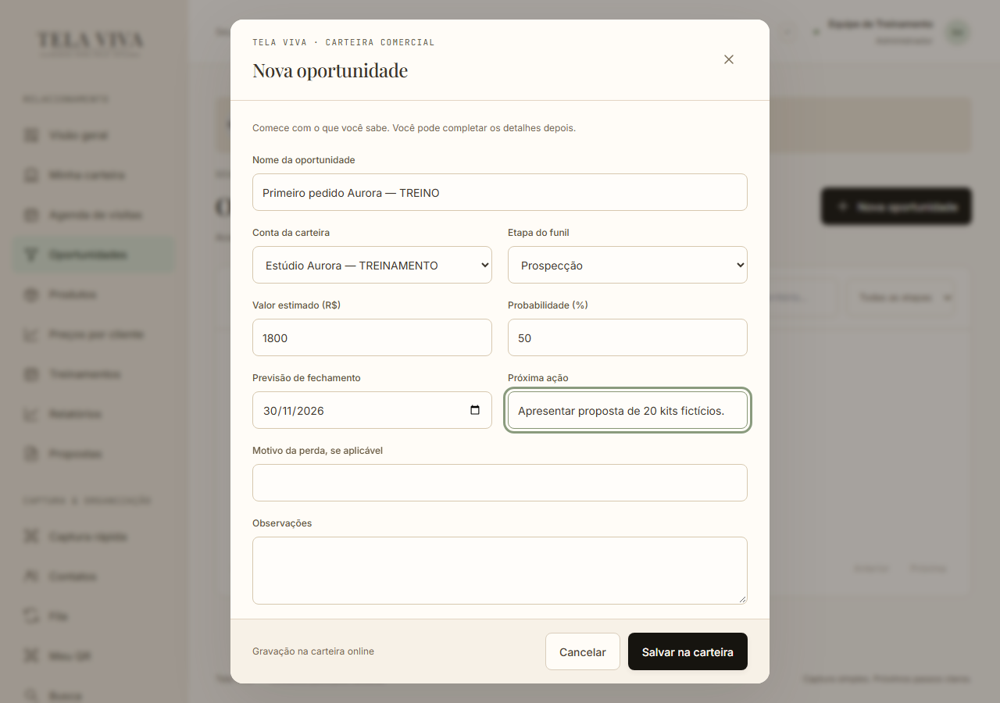
Aplicação Tela Viva · cenário fictício · /oportunidades
O que fazer
Crie uma oportunidade ligada à conta.
Informe o valor estimado, a previsão e a próxima ação.
Escolha a etapa que representa o avanço real da negociação.
Confira A oportunidade entra no funil com previsão e valor.
R$ 1.800,00 é valor didático, sem tabela comercial real.
Tela Viva · Passo 21 / 49
Avançar a oportunidade no funil
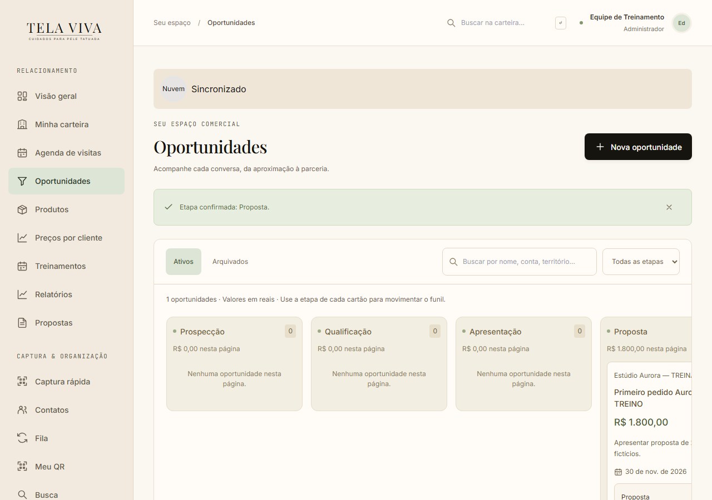
Aplicação Tela Viva · cenário fictício · /oportunidades
O que fazer
No cartão, use o seletor de etapa: Prospecção, Qualificação, Apresentação e Proposta.
Avance após a ação correspondente, sem pular a confirmação com o cliente.
Confira O cartão desta simulação chegou à etapa Proposta.
Mudar a etapa não cria uma proposta automaticamente.
Tela Viva · Passo 22 / 49
Conferir e manter o catálogo
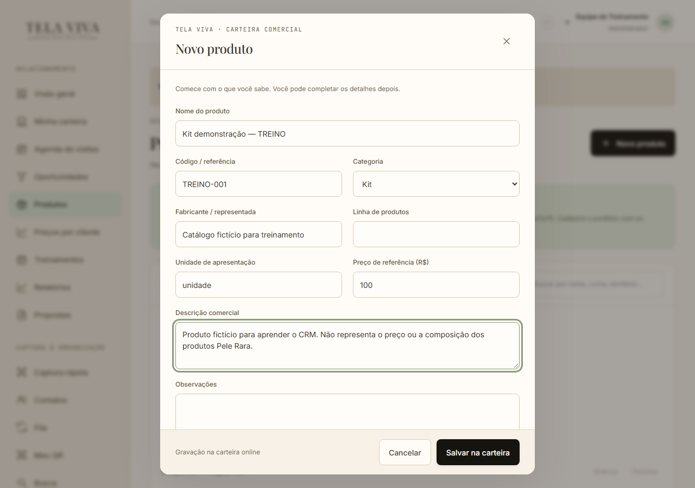
Aplicação Tela Viva · cenário fictício · /produtos
O que fazer
Gestor/admin cadastra nome, código, categoria e preço de referência.
O representante consulta o catálogo ao preparar a proposta.
Salve o produto e confira sua apresentação.
Confira O item fictício fica disponível no seletor de produtos.
Antes de operar de verdade, use a tabela oficial vigente.
Tela Viva · Passo 23 / 49
Solicitar condição comercial por cliente
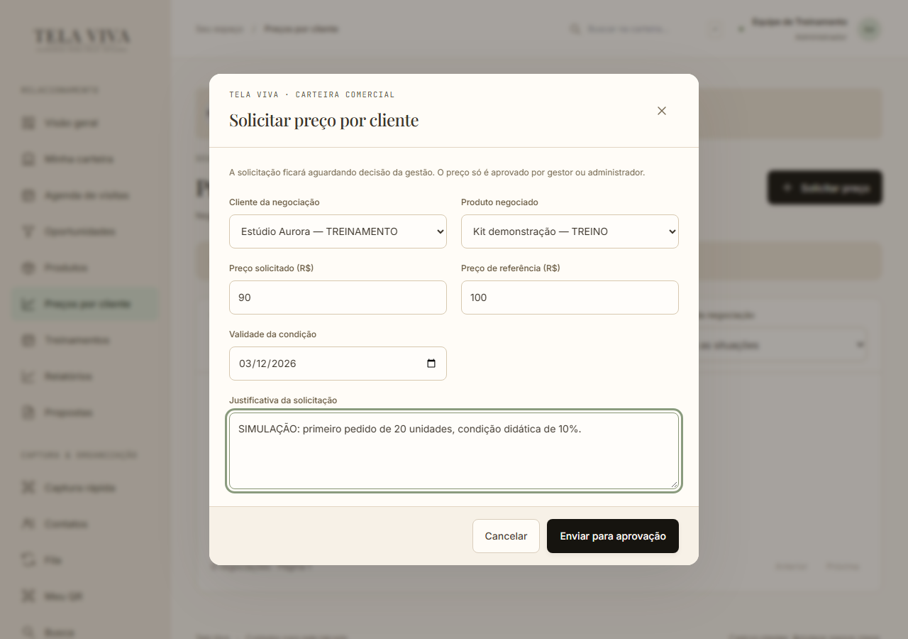
Aplicação Tela Viva · cenário fictício · /precos
O que fazer
Em Preços por cliente, clique em Solicitar preço.
Vincule conta e produto, informe R$ 90,00 e justifique a negociação.
Informe a validade e salve a solicitação.
Confira A gestão recebe uma condição comercial para decidir.
Tela Viva · Passo 24 / 49
Aprovar o preço com a gestão
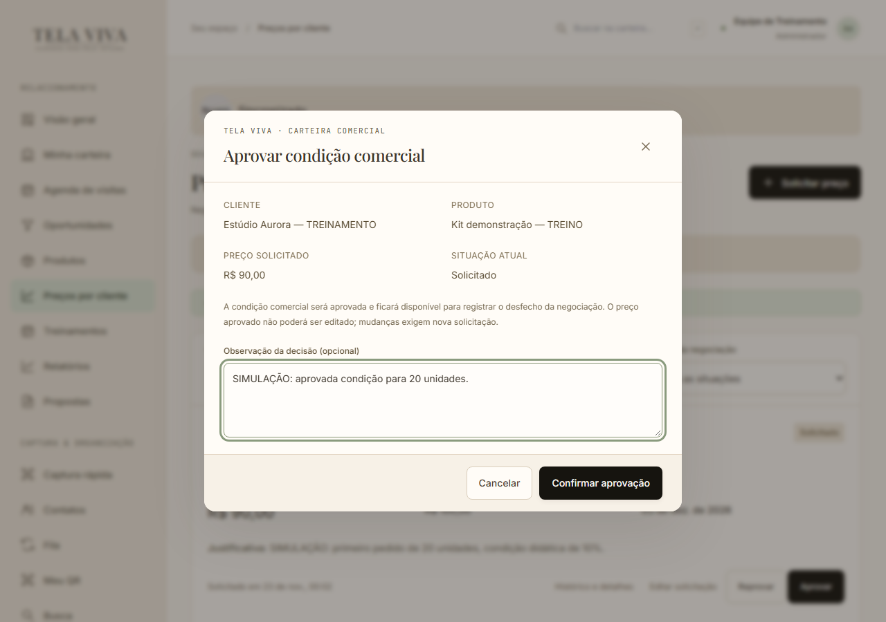
Aplicação Tela Viva · cenário fictício · /precos
O que fazer
Gestor/admin revisa o pedido e clica em Aprovar.
Registre a observação e confirme a aprovação; Reprovar exige o motivo correspondente.
Confira O preço fica aprovado e pode ter o desfecho registrado.
A aprovação não altera automaticamente os itens de uma proposta.
Tela Viva · Passo 25 / 49
Criar a proposta e seus vínculos
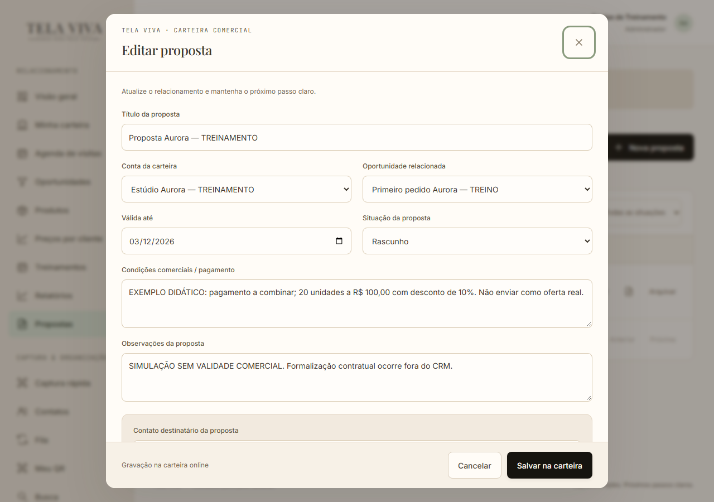
Aplicação Tela Viva · cenário fictício · /propostas
O que fazer
Em Propostas, crie um novo registro.
Vincule instituição e oportunidade; selecione explicitamente Marina em Contato destinatário da proposta.
Informe validade, condições e mantenha Rascunho durante a revisão.
Confira A proposta fica ligada ao contato ativo que receberá o rascunho de e-mail.
Mesmo que o nome apareça na impressão, selecione o contato para preparar o e-mail.
Tela Viva · Passo 26 / 49
Adicionar itens e conferir o cálculo
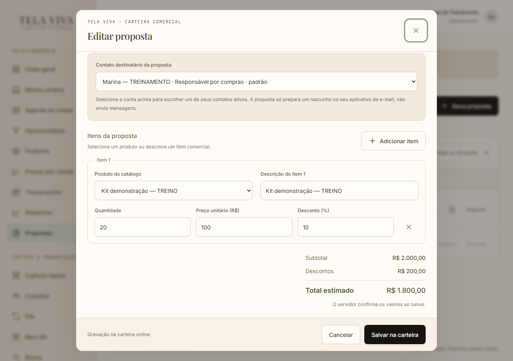
Aplicação Tela Viva · cenário fictício · /propostas
O que fazer
Selecione o produto e o contato ativo da conta.
Informe 20 unidades a R$ 100,00 e desconto de 10%.
Confira subtotal de R$ 2.000,00, desconto de R$ 200,00 e total de R$ 1.800,00.
Confira O valor unitário final equivale aos R$ 90,00 aprovados.
Não aplique desconto novamente sobre o preço já reduzido.
Tela Viva · Passo 27 / 49
Revisar a proposta confirmada
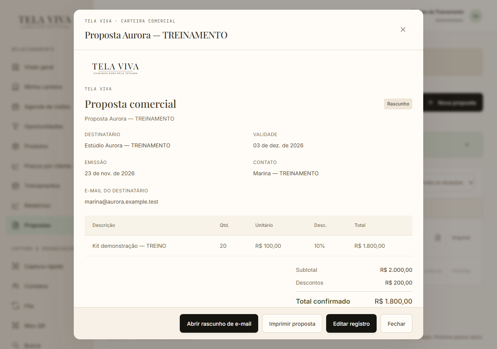
Aplicação Tela Viva · cenário fictício · /propostas
O que fazer
Abra a proposta salva e confira instituição, contato, itens, validade e condições.
O total confirmado vem do servidor.
Use Imprimir proposta para preparar o PDF.
Confira A proposta fictícia tem total confirmado de R$ 1.800,00.
Tela Viva · Passo 28 / 49
Preparar o e-mail da proposta
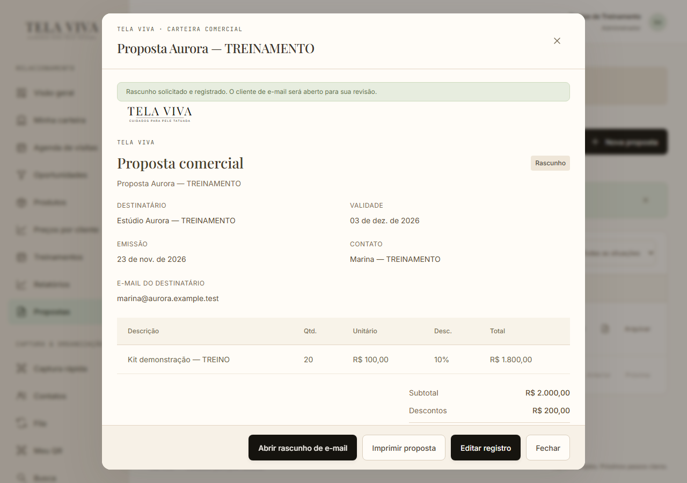
Aplicação Tela Viva · cenário fictício · /propostas
O que fazer
Clique em Abrir rascunho de e-mail.
No aplicativo de e-mail, confira destinatário e texto; anexe manualmente o PDF.
Somente confirme o envio após revisar o conteúdo.
Confira O CRM registra a solicitação de rascunho. A simulação não envia e-mail.
Rascunho, PDF e proposta apresentada são registros diferentes; não há anexo automático nem confirmação de entrega.
Tela Viva · Passo 29 / 49
Registrar apresentação e negociação
Aplicação Tela Viva · cenário fictício · /oportunidades
O que fazer
Depois da apresentação efetiva, edite a proposta e marque Apresentada.
No funil, mova a oportunidade para Negociação quando houver ajustes em discussão.
Confira A situação de cada registro passa a refletir o atendimento.
Tela Viva · Passo 30 / 49
Registrar o aceite da proposta
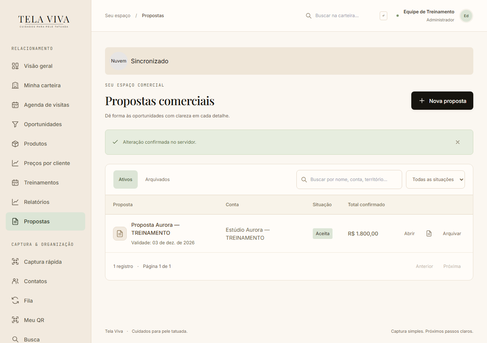
Aplicação Tela Viva · cenário fictício · /propostas
O que fazer
Após receber a confirmação do cliente, edite a proposta e selecione Aceita.
Registre o contexto da confirmação em observações ou atividade.
Confira A proposta está aceita no CRM.
Aceita não significa contrato gerado, assinatura realizada ou pedido faturado.
Tela Viva · Passo 31 / 49
Encerrar a oportunidade como ganha
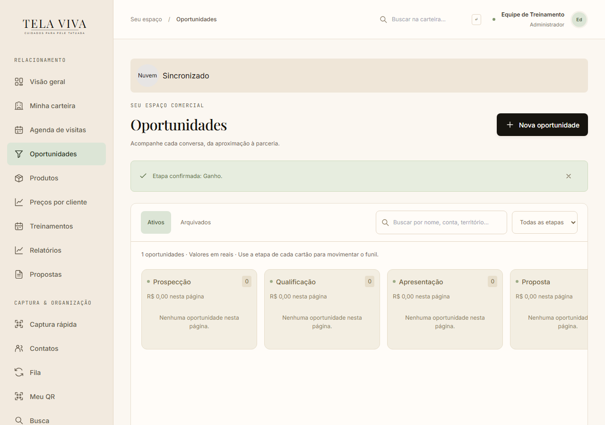
Aplicação Tela Viva · cenário fictício · /oportunidades
O que fazer
No funil, marque Ganho após confirmar o fechamento.
Em caso de recusa, use Perdido e registre o motivo na edição.
Confira A oportunidade fica ganha e alimenta os indicadores.
A proposta aceita não movimenta o funil automaticamente.
Tela Viva · Passo 32 / 49
Concluir a negociação de preço
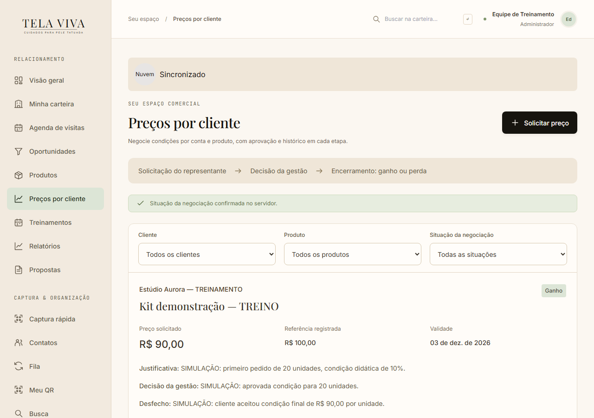
Aplicação Tela Viva · cenário fictício · /precos
O que fazer
Abra o preço aprovado e clique em Encerrar como ganho.
Informe o desfecho; use perdido quando a condição não resultar em fechamento.
Na conta, atualize Relacionamento para Ativo quando aplicável.
Confira Preço, oportunidade, proposta e relacionamento foram atualizados separadamente.
Tela Viva · Passo 33 / 49
Encaminhar a formalização do contrato
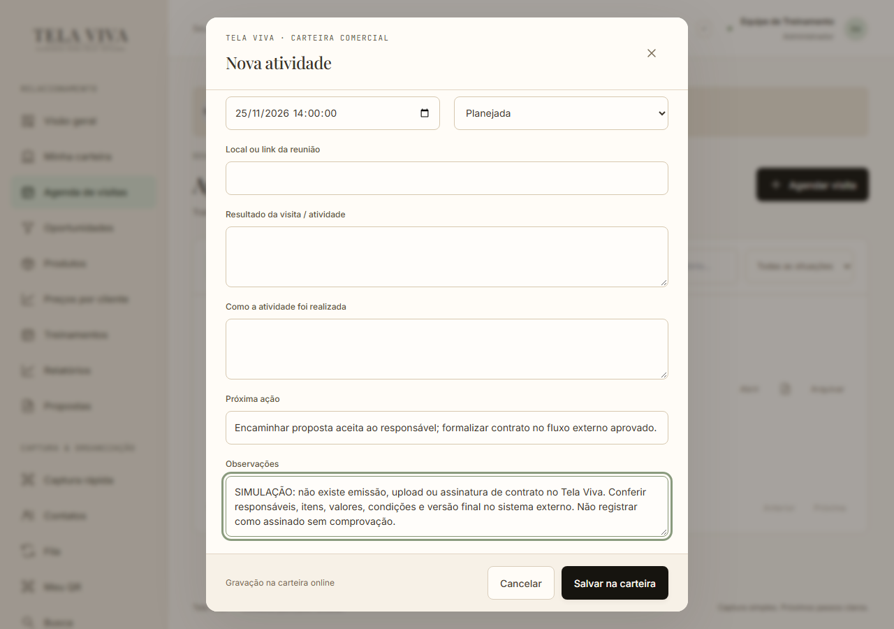
Aplicação Tela Viva · cenário fictício · /agenda
O que fazer
Crie uma tarefa de formalização externa vinculada à conta.
Defina responsável, prazo e próxima ação.
Depois do retorno, registre o resultado em atividade/observações.
Confira O CRM controla o acompanhamento da formalização externa.
Não existe módulo de contratos ou assinatura neste CRM. Esta etapa documenta o encaminhamento, sem contrato fictício.
Tela Viva · Passo 34 / 49
Programar o acompanhamento
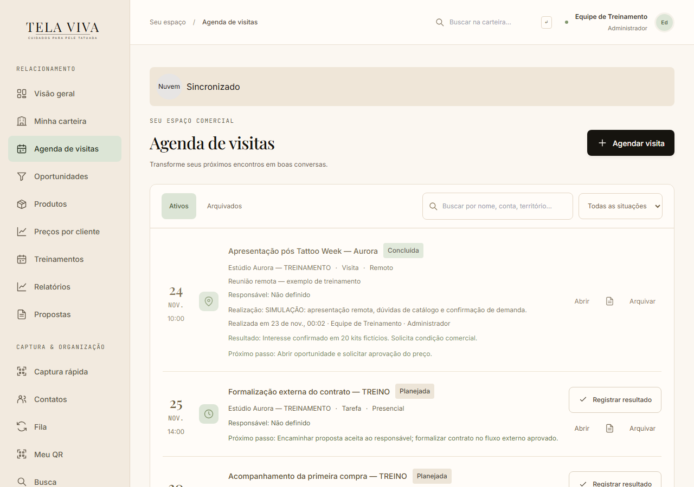
Aplicação Tela Viva · cenário fictício · /agenda
O que fazer
Crie uma nova ligação, visita ou tarefa para o retorno.
Defina data e objetivo para o próximo atendimento.
Confira A jornada continua após o aceite e a formalização.
Tela Viva · Passo 35 / 49
Conferir o painel após a jornada
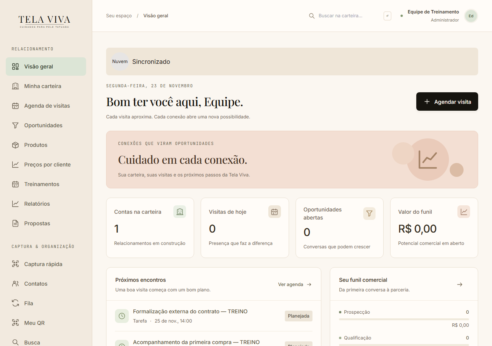
Aplicação Tela Viva · cenário fictício · /
O que fazer
Volte à visão geral e confira carteira, oportunidade ganha e compromissos.
Use os indicadores para organizar o dia e as pendências.
Confira Os dados da jornada agora aparecem nos indicadores reais desta base de treino.
Tela Viva · Passo 36 / 49
Criar um treinamento para a conta
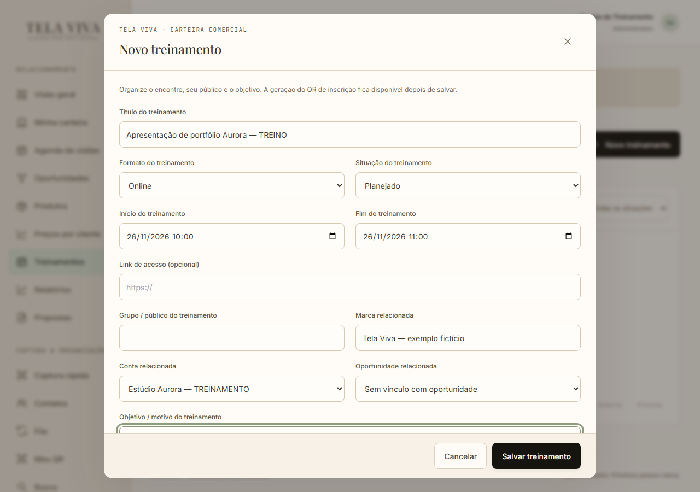
Aplicação Tela Viva · cenário fictício · /treinamentos
O que fazer
Em Treinamentos, clique em Novo treinamento.
Informe título, formato, datas, conta e objetivo.
Salve e abra o evento para gerenciar as inscrições.
Confira O evento mantém vínculo com o relacionamento comercial.
Tela Viva · Passo 37 / 49
Gerar o QR de inscrição do evento
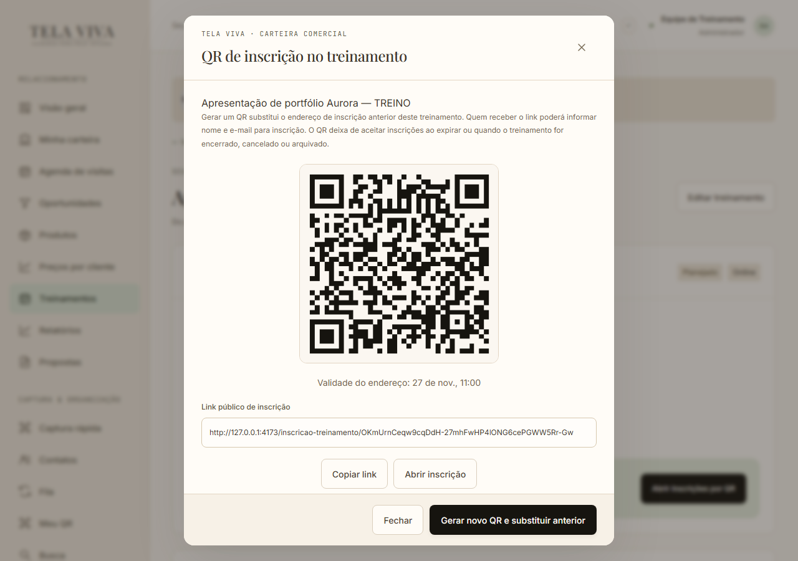
Aplicação Tela Viva · cenário fictício · /treinamentos/registro
O que fazer
Abra Inscrições por QR e gere o link do evento.
Compartilhe o QR do ambiente correto com os participantes.
Um novo token substitui o anterior.
Confira O evento ganha um link de inscrição restrito ao treinamento.
Este QR é local e temporário; o celular precisa conseguir acessar o servidor.
Tela Viva · Passo 38 / 49
Simular a inscrição do participante
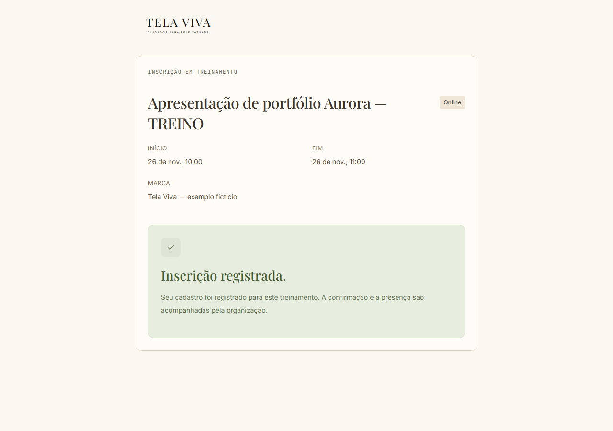
Aplicação Tela Viva · cenário fictício · /inscricao-treinamento/OKmUrnCeqw9cqDdH-27mhFwHP4lONG6cePGWW5Rr-Gw
O que fazer
A pessoa abre o QR/link e confere o evento.
Preenche nome/e-mail e clica em Registrar minha inscrição.
Confira A inscrição fictícia foi registrada pelo formulário público.
O mesmo e-mail no mesmo evento não deve criar inscrições duplicadas.
Tela Viva · Passo 39 / 49
Registrar a presença
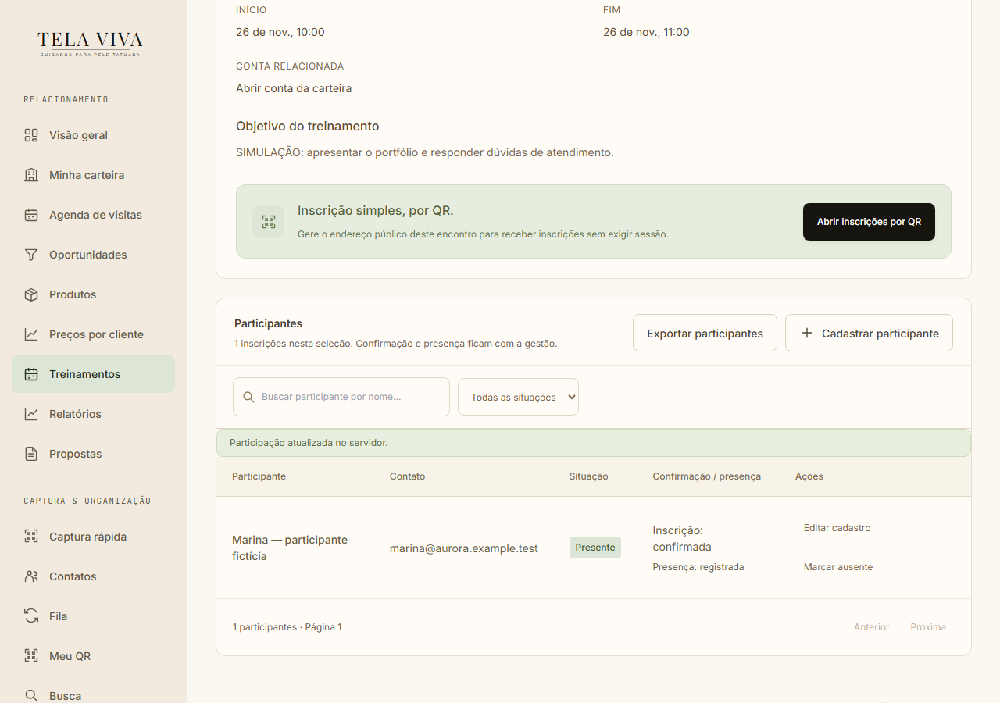
Aplicação Tela Viva · cenário fictício · /treinamentos/registro
O que fazer
Gestor/admin localiza o participante na ficha do evento.
Clique em Marcar presente e confirme a alteração.
Use a inscrição manual para quem não usou o QR.
Confira A presença fica registrada e pode compor os relatórios.
Tela Viva · Passo 40 / 49
Exportar participantes com proteção
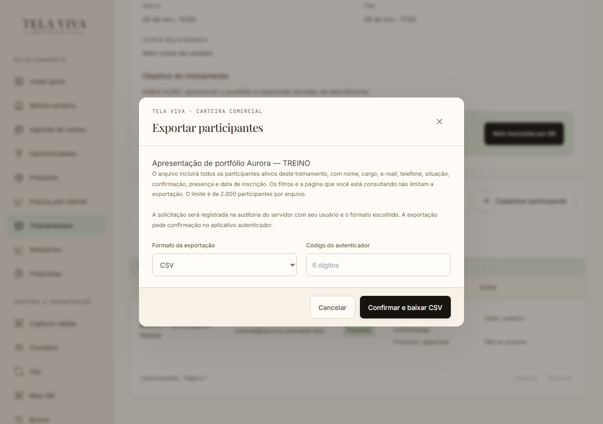
Aplicação Tela Viva · cenário fictício · /treinamentos/registro
O que fazer
Gestor/admin escolhe CSV ou XLSX e informa o código do autenticador.
Baixe a lista apenas para a finalidade de trabalho autorizada.
Confira A exportação de participantes exige confirmação adicional.
Não compartilhe listas de participantes em canais sem controle.
Tela Viva · Passo 41 / 49
Consultar relatórios comerciais
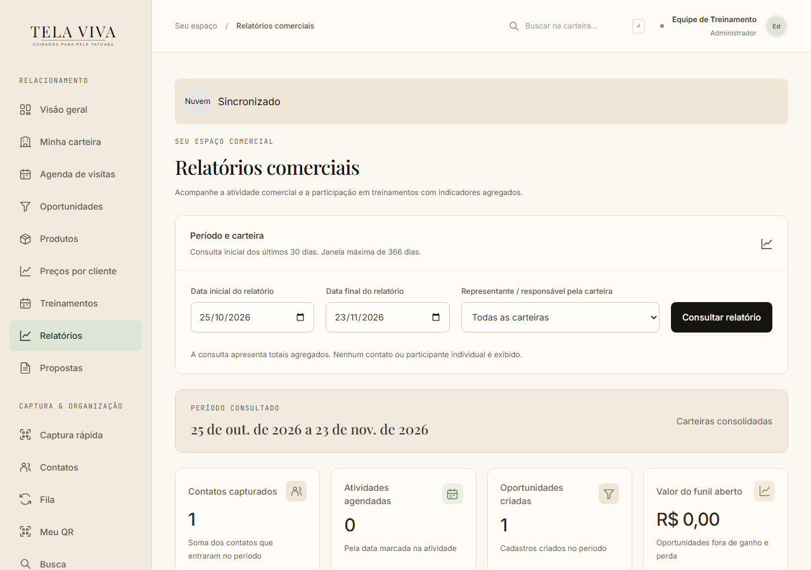
Aplicação Tela Viva · cenário fictício · /relatorios
O que fazer
Escolha as datas inicial e final e aplique o período.
A gestão pode filtrar a carteira/representante.
Confira visitas, oportunidades, propostas, treinamentos e inscrições.
Confira Os relatórios mostram totais e resultados, sem lista pessoal de participantes.
As datas usam o calendário de São Paulo; a janela máxima é 366 dias.
Tela Viva · Passo 42 / 49
Oferecer autocadastro pelo Meu QR
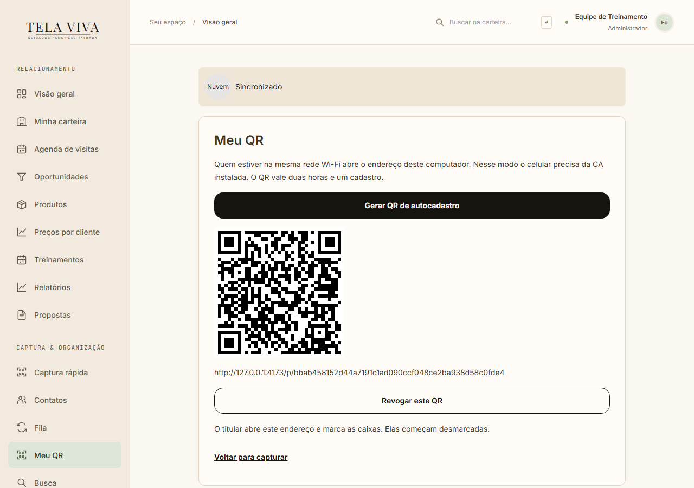
Aplicação Tela Viva · cenário fictício · /meu-qr
O que fazer
Clique em Gerar QR de autocadastro.
O titular abre o endereço e escolhe as autorizações apresentadas.
Revogue o QR se ele deixar de ser necessário.
Confira A alternativa permite que a própria pessoa cadastre seus dados.
Por padrão, o QR de autocadastro vale duas horas e um cadastro. Confira o prazo e o limite configurados no ambiente. Este exemplo usa endereço local.
Tela Viva · Passo 43 / 49
Ler QR com a câmera
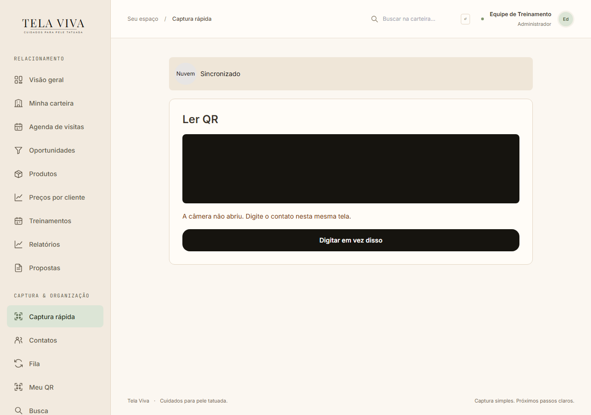
Aplicação Tela Viva · cenário fictício · /capturar/qr
O que fazer
Em Captura, use Ler QR e autorize a câmera do aparelho.
Aponte para o QR e confira os dados antes de continuar.
Confira A tela oferece a leitura por câmera.
A captura de câmera física não foi exercitada neste computador; use HTTPS e confira a permissão do navegador.
Tela Viva · Passo 44 / 49
Buscar contatos para retomar atendimento
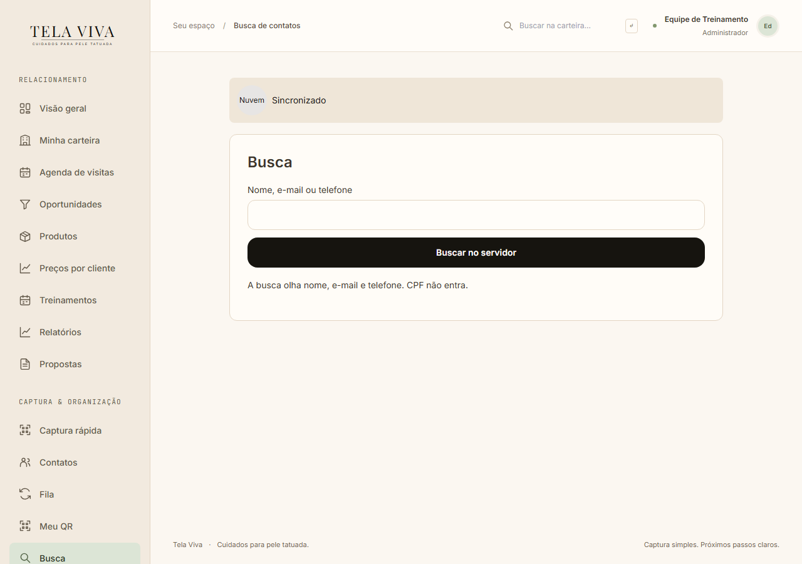
Aplicação Tela Viva · cenário fictício · /busca
O que fazer
Abra Busca e pesquise um contato por dado conhecido.
Abra o resultado para consultar o lead e as ações permitidas.
Confira A pesquisa consulta os registros acessíveis à sua sessão.
Tela Viva · Passo 45 / 49
Revisar possíveis duplicatas
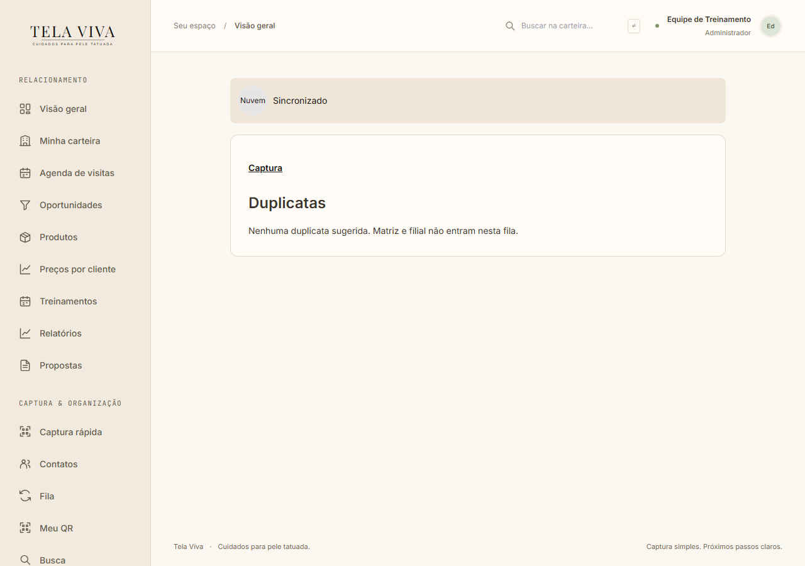
Aplicação Tela Viva · cenário fictício · /duplicatas
O que fazer
Confira os pares sugeridos pelo sistema.
Quando houver um par, abra a comparação e escolha os campos antes de confirmar a fusão.
Confira A deduplicação oferece revisão humana.
Não foi feita fusão nesta jornada; ela exige escolha explícita e TOTP, com recuperação do absorvido por 90 dias.
Tela Viva · Passo 46 / 49
Importar e exportar contatos por planilha
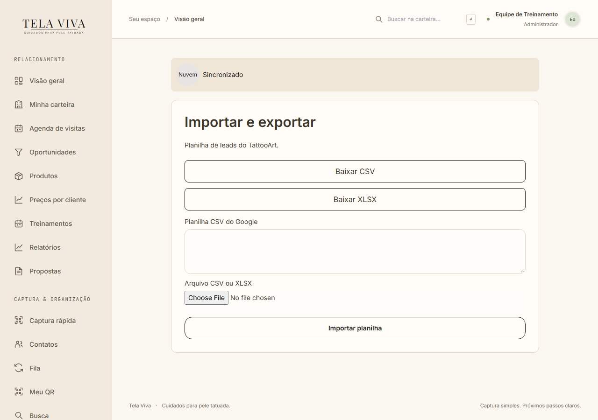
Aplicação Tela Viva · cenário fictício · /planilha
O que fazer
Abra Planilha a partir de Minha conta.
Cole CSV ou selecione CSV/XLSX e confira o resultado da importação.
Use a exportação apenas com o perfil e a confirmação exigidos.
Confira A tela reúne os recursos de planilha existentes.
O guia não importa a base real nem dispara mensagens. A origem importada não comprova autorização para campanhas.
Tela Viva · Passo 47 / 49
Administrar os acessos da equipe
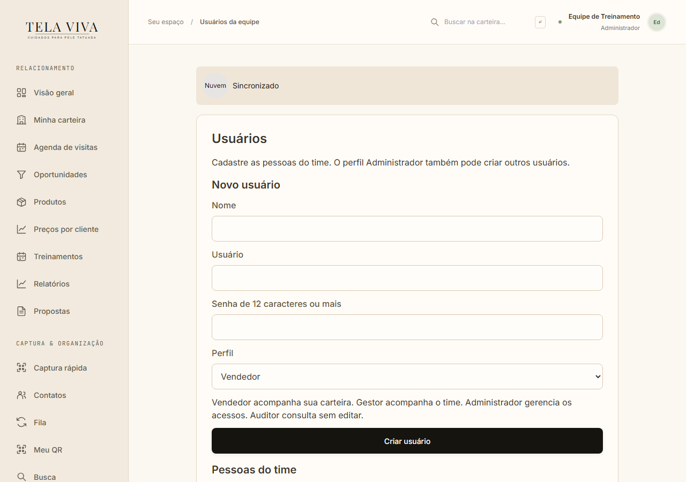
Aplicação Tela Viva · cenário fictício · /usuarios
O que fazer
Administrador informa nome, usuário, senha inicial e perfil.
Crie uma conta individual para cada colaborador.
Revise os acessos existentes e confirme operações sensíveis quando solicitado.
Confira Cada pessoa trabalha com seu perfil e permissões.
A simulação apenas mostra esta tela; não cria acesso na base da equipe.
Tela Viva · Passo 48 / 49
Cuidar da própria sessão
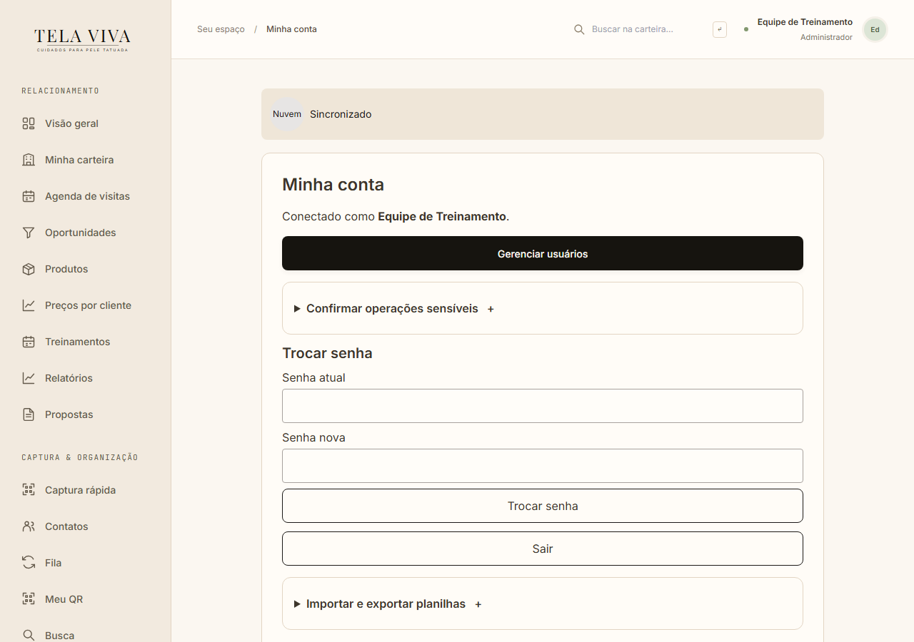
Aplicação Tela Viva · cenário fictício · /minha-conta
O que fazer
Use Minha conta para trocar senha, configurar o autenticador e confirmar operações sensíveis.
Ao concluir o trabalho em aparelho compartilhado, clique em Sair.
Confira As configurações pessoais ficam separadas da captura.
Nunca fotografe segredo de autenticador, senha ou token.
Tela Viva · Passo 49 / 49
Usar o CRM no celular
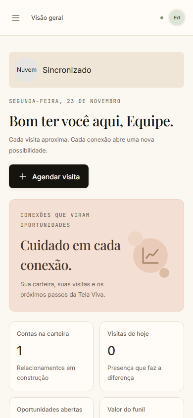
Aplicação Tela Viva · cenário fictício · /
O que fazer
Abra o menu para alternar entre as seções.
Mantenha a captura acessível na rotina de visita.
Confira a conexão antes de salvar registros comerciais.
Confira A mesma aplicação oferece navegação móvel.
O modo offline atende captura e fila; carteira e propostas exigem conexão.
Consulta rápida
Quem pode fazer cada ação
Ação
Vendedor
Gestor
Administrador
Auditor
Capturar e trabalhar carteira comercial
Própria carteira
Visão ampliada
Visão ampliada
Consulta autorizada
Criar/editar catálogo
Consulta
Sim
Sim
Consulta
Solicitar preço / encerrar negociação aprovada
Na carteira autorizada
Sim
Sim
Consulta
Aprovar/reprovar preço
Não
Sim
Sim
Não
Qualificar, descartar, reabrir e promover lead
Solicita à gestão
Sim
Sim
Não
Promover a cliente / fusão
Não
Com TOTP
Com TOTP
Não
Confirmar inscrição / marcar presença
Não
Sim
Sim
Sem acesso pessoal de participantes
Exportar participantes
Não
Com TOTP
Com TOTP
Não
Importar contatos / exportar contatos
Não / não
Sim / não
Sim / com confirmação exigida
Não
Criar usuários
Não
Não
Sim
Não
Login não pede TOTP. Promoção, fusão, exportação e alterações sensíveis mantêm a confirmação prevista para cada operação. Cada colaborador deve usar sua própria conta.
Ações complementares das listas
Consultar, corrigir, arquivar e restaurar
Recurso
Como operar
O que conferir
Busca e filtros
Use o campo de pesquisa e os seletores da seção. Na carteira, filtre relacionamento; no funil, etapa; nas demais listas, situação.
Limpe os filtros se um registro conhecido não aparecer; confira Ativos/Arquivados e a página.
Abrir / editar
Abra o registro e use Editar, ou o botão de edição da linha/cartão.
Edite somente a versão atual e aguarde a confirmação do servidor.
Arquivar
Use Arquivar e confirme Arquivar registro. A ação retira o item da lista ativa.
É arquivamento lógico; consulte Arquivados para localizar o registro.
Restaurar
Selecione Arquivados, use Restaurar e confirme Restaurar registro.
O item volta à lista ativa. Não crie outro registro para substituir o arquivado.
Histórico
Consulte a ficha/histórico da conta, negociação ou lead. Preços oferecem Histórico e detalhes; lead oferece Ver trilha de auditoria.
Verifique qual alteração ocorreu e quando. Não altere dados só para simular histórico real.
Contatos da conta
Adicione pessoas; marque ativo/inativo e escolha um contato padrão ativo. O interlocutor legado pode ser trazido para a lista.
Um inativo não deve ser escolhido como novo destinatário de proposta.
Atividades
Escolha visita, ligação, e-mail, reunião ou tarefa. Use Planejada, Concluída ou Cancelada; atribua responsável e colaboradores ativos.
Preencha realização, resultado e próxima ação ao concluir.
Itens de proposta
Adicione item de catálogo ou descrito manualmente; informe quantidade, preço e desconto. Remova item pelo botão correspondente.
Confira o total confirmado após salvar. Preço aprovado não é aplicado automaticamente.
Essas ações foram mapeadas na interface e no contrato do módulo. A jornada ilustrada exerce o fluxo principal; nem todas as alternativas de arquivamento e restauração foram executadas.
Dados e captura
Exceções que a equipe precisa conhecer
Situação
Como agir
Pessoa física, jurídica ou indefinida
Capture sem exigir documento. Depois, escolha PF para CPF ou PJ para CNPJ, razão social e fantasia; complete conforme a necessidade do atendimento.
Qualificação recusada
Confira nome, CPF/CNPJ válido e ao menos e-mail ou telefone. O contato continua salvo; corrija e tente a transição novamente.
Promoção recusada
O contato precisa estar qualificado. Confira endereço com logradouro, número, cidade e UF, perfil autorizado e código TOTP atual.
Sem internet
Continue a captura local. Confira a fila depois; não considere um registro comercial salvo até receber a confirmação da API.
Fila presa
Leia o motivo; quando disponível, baixe o JSON para recuperar o registro. Não limpe os dados do navegador antes de preservar a informação.
Conflito de sincronização
Compare valores do aparelho e do servidor. Escolha conscientemente o valor correto; a fila não deve sobrescrever outra alteração sem revisão.
Conflito comercial de versão
Reabra/atualize o registro. Confira a alteração de outro usuário e reaplique somente o que ainda fizer sentido.
Consulta de CNPJ/CEP
Use os botões de enriquecimento no contato sincronizado. Revise as sugestões e aplique os campos escolhidos; não é substituição automática.
Duplicata
Abra o par sugerido, escolha campo a campo e confirme a fusão com TOTP. O absorvido fica recuperável por 90 dias; use a recuperação disponível após a operação.
Descarte e reabertura
Gestão informa o motivo e descarta. Quando cabível, use Reabrir como rascunho ou capturado. Não elimine para simular perda comercial.
Revogação / eliminação
Encaminhe à gestão. Revogar bloqueia a comunicação conforme o consentimento; eliminar é uma ação sobre dados pessoais, com confirmação. Não use no lugar de arquivar conta.
Proposta e contrato
O que fazer depois do “sim”
1. Confirmar o aceite
Confira a proposta, seus itens, versão, validade, preço, condições e quem confirmou. Registre a interação em atividade/observações.
2. Formalizar externamente
Encaminhe ao responsável pelo contrato. Use o documento e a assinatura adotados pela empresa. Não existe editor, upload ou assinatura de contrato no Tela Viva atual.
3. Acompanhar no CRM
Crie tarefa com responsável/prazo. Registre retorno e referência externa quando disponível. Atualize proposta, oportunidade, relacionamento e próxima visita separadamente.
Checklist de encaminhamento
Partes e responsável comercial conferidos.
Proposta aceita e versão final identificadas.
Itens, quantidades, valores, pagamento e demais condições conferidos pelo responsável.
Responsável pela formalização e prazo de retorno definidos.
Assinatura comprovada no processo externo antes de registrar “formalização concluída”.
O PDF de exemplo anexado a este treinamento é uma proposta comercial fictícia, marcada sem validade. Não é contrato nem modelo jurídico. Aceite no CRM não confirma assinatura, entrega ou faturamento.
Comunicação e integrações
Como a equipe comunica sem confundir estados
Ação
Comportamento atual
Imprimir proposta
Prepara uma impressão local. O navegador permite salvar PDF. Isso não envia nem altera automaticamente o aceite.
Abrir rascunho de e-mail
Valida contato ativo e registra a solicitação antes de abrir o cliente de e-mail. Revisão, anexo e envio são feitos no aplicativo de e-mail.
Campanha de e-mail
Está no plano solicitado, não é funcionalidade de envio automático já implementada no CRM.
WhatsApp
Há integração preparada com API oficial, fila e bloqueio por pedido de parada. A preparação é desativada por padrão. Credenciais e ativação real precisam de verificação própria.
Pós Tattoo Week para base histórica
Requer campanha própria. A automação de boas-vindas considera leads novos e não representa disparo a todos os contatos antigos.
Google Forms / Sheets
Depende da integração configurada no ambiente. A captura por formulário não foi testada com conta externa neste treinamento.
Importar planilha
Conferir resultado e duplicatas; importação não comprova consentimento para comunicação e não faz fusão automática por vontade do operador.
Na política atual da Meta, iniciar conversa pela plataforma exige template aprovado e autorização do destinatário. Respostas sem template dependem da janela de atendimento de 24 horas contada da mensagem do usuário. Espaçar mensagens não garante ausência de bloqueio. Consultar política oficial.
Prática guiada · 75 minutos
Roteiro para o instrutor
Tempo
Atividade
O participante deve demonstrar
0–10 min
Apresentar o cenário, perfis e distinção entre lead, conta e oportunidade.
Explicar onde salvar cada informação.
10–25 min
Capturar incompleto, completar dados, conferir fila e qualificar com a gestão.
Localizar o registro e explicar requisitos da promoção.
25–40 min
Criar conta, contato padrão, agenda e oportunidade.
Registrar resultado de visita e próxima ação.
40–55 min
Solicitar condição e criar proposta com 20 unidades e desconto de 10%.
Obter R$ 1.800,00 no total confirmado.
55–65 min
Registrar apresentação/aceite e formalização externa.
Atualizar estados independentes e criar tarefa.
65–75 min
Revisar treinamento, relatórios e dúvidas.
Conferir continuidade e indicadores.
Exercício individual
Em ambiente exclusivo de treinamento, cada pessoa usa “Estúdio Exercício + seu primeiro nome”, adiciona um contato fictício, agenda uma visita e cria uma proposta de 10 unidades a R$ 100,00 com 5% de desconto. Depois registra uma tarefa de retorno.
Gabarito: subtotal R$ 1.000,00; desconto R$ 50,00; total R$ 950,00. A proposta não deve ser enviada. O participante deve explicar por que a aceitação não gera contrato automaticamente.
Não pratique fusão, eliminação, revogação, mudança de perfis ou disparos em massa na base de trabalho real.
Fechamento da rotina
Checklist da equipe e limites deste material
No começo do dia
Entrar com usuário próprio.
Conferir agenda e próximas ações.
Verificar fila pendente.
Depois do contato
Registrar contexto e origem.
Conferir dados/autorização.
Definir próximo responsável e prazo.
Depois da negociação
Atualizar proposta e funil.
Encaminhar contrato externo.
Agendar acompanhamento.
O que foi exercitado
Login, captura/autosave/sincronização, qualificação e promoção com TOTP real em base isolada, conta e pessoas, atividade concluída, oportunidade, produto fictício, solicitação/aprovação/encerramento de preço, proposta calculada e PDF, solicitação auditada de rascunho, aceite e ganho, tarefa externa, treinamento, inscrição pública por link e presença.
O que foi mostrado ou documentado, sem execução externa
Câmera física, envio de e-mail, disparo WhatsApp, integrações externas, consultas CNPJ/CEP, fusão/recuperação, eliminação, importação/exportação de base real e administração de usuários da equipe. Telas auxiliares foram consultadas; não se afirma que todas as alternativas foram testadas.
Referências internas: README, docs/TELA-VIVA.md, docs/ACESSO.md, docs/WHATSAPP.md e componentes da aplicação na versão local capturada em 23/11/2026. Se a interface mudar, revisar o treinamento.